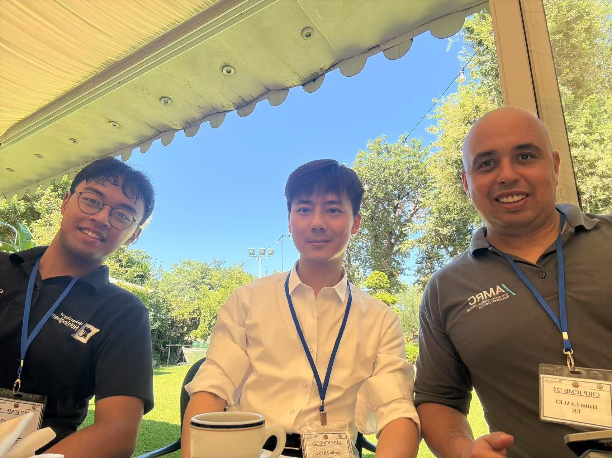
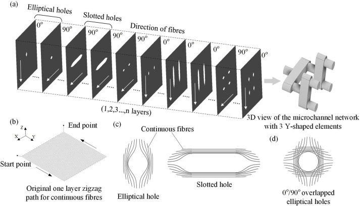

Dr. Nanya Li currently is a professor at Nanjing University of Aeronautics and Astronautics and he
was awarded an NSFC Science Fund Program for Excellent Young Scholars (Overseas) program. As a
pioneer, he utilized microwaves to open a new door for the 3D printing of lightweight and customized
continuous carbon fiber reinforced composites (CFRP) with high speed. With outstanding and
innovative research achievement and leadership as an Alexander von Humboldt fellow at the Karlsruhe
Institute of Technology (KIT), in 2020, he was awarded the Young Investigator Group Preparation
Program (YIG Prep Pro) funded fellowship after being ear-marked as a potential professor candidate
at KIT. After reviewing by worldwide recognized researchers, he won the 1st prize of "NEULAND
Innovation" at KIT and the “JEC Innovation Award Finalist” in 2020. With those achievements, he
proposed a “Helmholtz Validation Funds” project with professors at KIT. As a research mentor, he has
supervised master’s and bachelor’s students in material science and technology, electrical
engineering, and mechanical engineering. For teaching tasks, a lecture in both English and Chinese
languages on “Design and Manufacturing of Lightweight Structures” has been conducted for
undergraduate students. He has been part of the International Academy for Production Engineering
(CIRP) community since 2021 and has been elected as the Chair of CIRP research affiliate in 2024.
News:
On 16th- 24th August 2025, Prof. Nanya Li and Mr. Changkun Sun joined the CIRP General
Assembly
in Stockholm (KTH) and presented our paper: “Design optimization of graded cellular
structures
for additive manufacturing via differentiable Voronoi diagram.” Prof. Li also did a
technical
presentation on “STC Dn” on the topics of “DFA-LEGO: Design for Assembly of Complex
Microwave
Waveguides as LEGO Bricks for Satellite Application.”
On 16th- 18th July 2025, Mr. Hanlin Zheng has presented our paper entitled: “Parameter
Optimization and Material Characteristics for Multi-axis Additive Manufacturing of CF/PEEK
Composites” at the 19th CIRP Conference on Intelligent Computation in Manufacturing
Engineering
(CIRP ICME’25) held in Naples, Italy, which was organized by Prof. Roberto Teti.

On the 18th of June 2025, Prof. Li met Prof. Frank Henning from Fraunhofer ICT and presented
an
invited speech at SAMPE 2025 International Conference.
On the 27th of May 2025, Mr. Cheng Guang and Ms. Yuxin Zhang have joined the ICCES 2025
International Conference and presented their research works.
On the 16th of May 2025, Prof. Li participated in the “中国微米纳米技术学会第十届青年科学家论坛” and presented
an
invited talk on “Design Method of Ultrasound Phase Array for tFUS.”
On 13th April 2025, Prof. Li has presented an invited speech at the Polyu-Wuxi Technology
and
Innovation Research Institute about “Ethics in Human-robot Collaboration for Additive
Manufacturing.”
On the 12th of May, Prof. Yi Xiong came to NUAA and did an invited presentation for
“Structure
and Process Optimization Method for the Additive Manufacturing of Fiber-reinfroced
Composites.”
On the 31st of March 2025, together with Prof. Cheng, Prof. Li joined the “全国生物电工与生物电磁高峰会议”
at
Shenzhen, China.
Mr. Hanlin Zheng has submitted a paper on the 2025 IEEE/ASME International Conference on
Advanced Intelligent Mechatronics (AIM2025) and accpted.
Supervised by Prof. Li, Mr. Changkun Sun has published a CIRP Annal paper (Top in Mechanical
Engineering) entitled:” Design Optimization of Graded Cellular Structures for Additive
Manufacturing via Differentiable Voronoi Diagram”
Prof. Nanya Li has been invited to give a presentation at the South China University of
Technology, “Microwave-assisted 3D Printing of Lightweight CFRP Structures: from raw
materials
to design, processing & sustainable manufacturing.”
With other colleagues, Mr. Changkun Sun has published an article in COMPOSITES PART
B-ENGINEERING (IF: 11.1) for the fabrication of microchannel networks within continuous
fibre-reinforced thermoplastic (CFRTP) composites using a novel path planning method. The
integration of GaInTi liquid metal within these microchannels has led to a notable 49 %
enhancement in the thermal conductivity of CFRTP samples. https://doi.org/10.1016/j.compositesb.2025.112391
Congratulations!

Suported by Prof. Ong and Prof. Bartolo, Mr. Ting Wang has published a review article in the
“International Journal of Computer Integrated Manufacturing”. The title is: “Robot-assisted
additive manufacturing for aerospace applications: recent trends and its future
possibilities.”
https://doi.org/10.1080/0951192X.2025.2478007
Congratulations!
Prof. Nanya Li has been invited to visit Karlsruhe Institute of Technology, Fraunhofer ICT
and
TRUMPF on 24th to 25th February.
Ms. Jianling Lu has published a paper entitled:”Continuous carbon fiber reinforced filaments
manufactured by a cost-effective and two-step impregnation approach” on Procedia CIRP.
DOI: 10.1016/j.procir.2025.01.017
Prof. Nanya Li joined the CIRP Winter Meeting and managed the CIRP Research Affiliates
Meeting.
He also did technical presentations on “STC Dn” and “CWG Ethics in Manufacturing” on the
topics
of “Printing Path Planning for Fabricating Microchannel Networks inside CFRP” and “Ethics
Surrounding the Application of Humanoid Robots for Future Manufacturing.”
Mr. Hanlin Zheng, Changkun Sun, Guang Cheng and other students joined the World Intelligent
Manufacturing Exhibition at a booth of SiliconVision Technology from December 20th to 22nd,
2024
in Nanjing, China. They introduced our multi-axis robot printing system and CF fiber
filament
fabrication equipment to the visitors.
Dr. Li was invited to be a chair of a section of WE-F7 “Emerging Technologies and
Applications”
at the 2024 Asia-Pacific Microwave Conference (APMC),
November 17–20 2024, Bali, Indonesia.
Together with Dr. Guido Link from the Karlsruhe Institute of Technology, Mr. Changkun Sun
has
submitted a paper "Microwave-assisted High-speed Winding of Continuous Carbon Fiber
Reinforced
Thermoplastic Composites" that was accepted by APMC, November 17-20 2024, Bali, Indonesia.
Mr. Hanlin Zheng, who graduated from the Mechatronics at KIT, has joined our group as a
research
assistant (PhD candidate).
Dr. Li has given a keynote presentation “Microwave-assisted 3D Printing Technology of CFRPs”
at
the 4th Guangdong Graduate Academic Forum “Intelligent Manufacturing and Robotics”, 2-3
November
2024, Shenzhen, China.
Dr. Li was invited to give a presentation “Microwave-assisted 3D Printing of Lightweight
CFRP
Structures: from raw materials to design, processing & sustainable manufacturing”, at the
Research seminar at HKUST(GZ), 31 November 2024, Guangzhou, China.
Dr. Li was invited to give a speech at the 4th International Conference on Research Advances
in
Additive Manufacturing (RAAM), “Model-driven Predictive Modelling for Microwave-assisted 3D
Printing Process”, 28-30 June 2024, Nanjing, China.
Dr. Li has received an NSFC research funding for young researchers for the research project
"
Research on the Uniform Temperature Field Control and Key Mechanisms of Microwave-assisted
Additive Manufacturing of CFRPs”, 2025-2027, China.
Dr. Li was invited to give a keynote speech at the Leverage of IT in Engineering and Science
International Conference, “Predictive Modelling for Microwave assisted Additive
Manufacturing of
Composite Materials”, 30-31 October 2023, İstanbul, Türkiye.